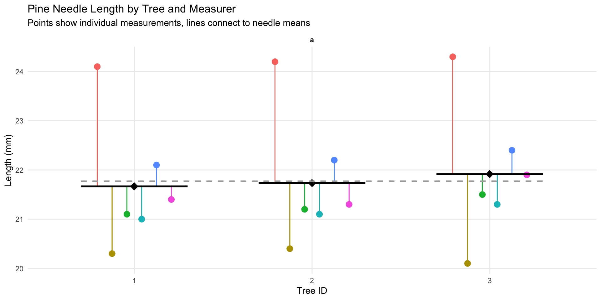
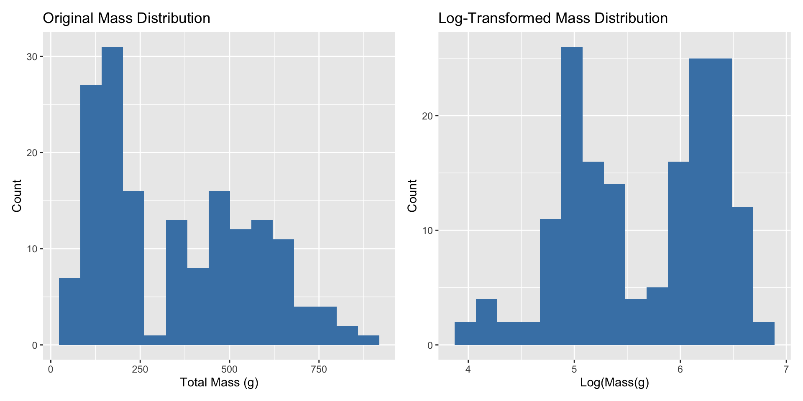
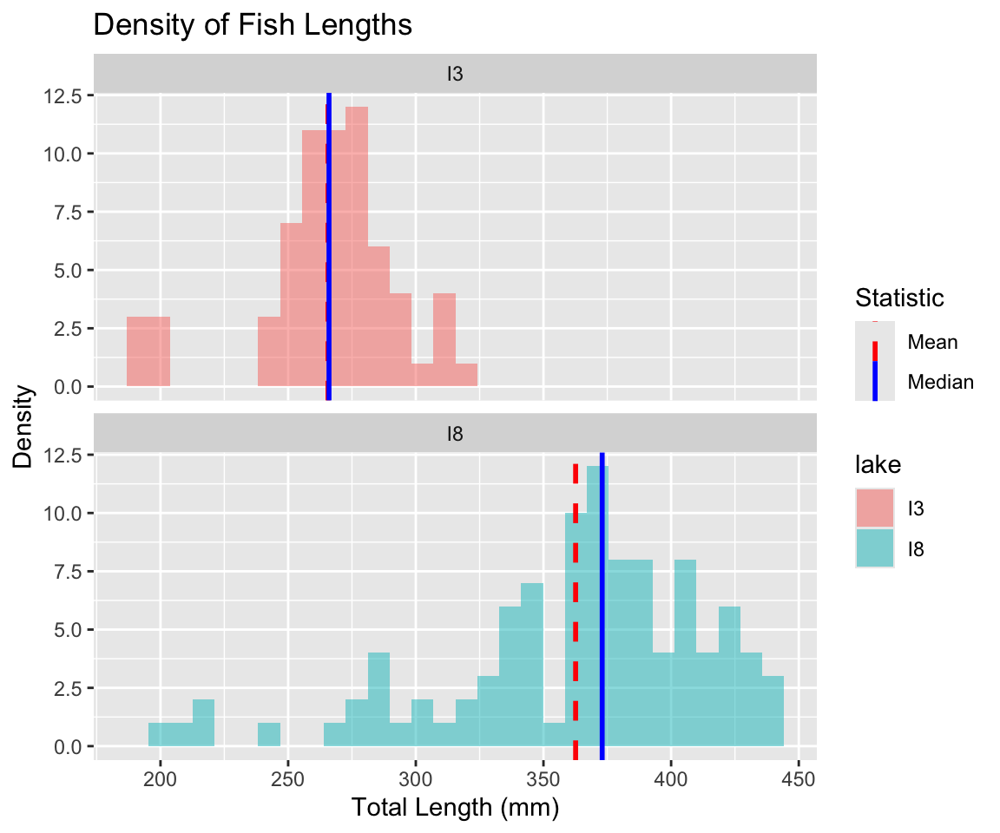
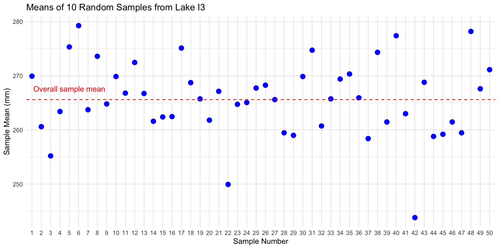

NO3 - what is it? Are you sure? Why might you get in legal trouble if you used this?
Lecture 3: Descriptive Statistics and Uncertainty in R and Tidyverse
The objectives:
Understand why statistics is vital in biology
Calculate and interpret measures of central tendency (mean, median, geometric mean)
Calculate and interpret measures of spread (standard deviation, variance, IQR)
Understand data transformations for skewed distributions
Visualize descriptive statistics for our data
Learn how to handle uncertainty in our data
We’ll use a dataset on grayling - gray_I3_I8.csv from two different lakes to explore these concepts.. like you did in the homework
Lecture 3: Populations and Samples
Before we dive into descriptive statistics, let’s clarify some fundamental concepts:
Population: entire group of things under consideration
Sample: A subset of the population that is actually measured
Sample unit: The individual thing drawn from the population
Types of populations:
Observational population: group whose characteristics are studied passively (e.g., head width of all corn earworms in a field)
Experimental population: actively manipulate variables to observe effects and establish cause-and-effect relationships (e.g., manipulate temperature and monitor head width)
Sampling involves
inference - generalizing from what is observed in the sample to what is present in the population.
Valid inference requires random sampling.
Lecture 3: Parameters vs. Statistics
It’s important to distinguish between:
Parameters: True numerical values for a population (usually denoted by Greek letters)
Statistics: Estimates of parameters based on samples (usually denoted by Roman letters)
For example:
Population mean (μ) is estimated by sample mean (Y̅)
Population standard deviation (σ) is estimated by sample standard deviation (s)
Lecture 3: Kinds of Biological Variables
Understanding the type of variable you’re working with is essential for selecting appropriate statistics:
Measurement or Quantitative Variables
Continuous: Any value between extremes of scale is possible (e.g., mass, length)
Discrete (meristic): Only fixed values (usually integers) between extremes are possible (e.g., bristle number, egg count)
Rank Variables (Ordinal)
Assign only order, not quantity - student rank - 1 2 3
Nothing implied about relative distance between values
Categorical Variables (Qualitative)
No quantitative information (e.g., male/female, living/dead)
Some are simplifications of quantitative variables (e.g., color instead of wavelength)
Lecture 3: Derived Variables
Derived Variables
Percentages, Proportions: Ratio of some component to total
Ratios: Relation of two variables
Rates: Quantity per unit (time, mass, etc.)
Indices: More complex derived variables (e.g., condition index)
Let’s explore our grayling dataset and identify the types of variables it contains.
Lecture 3: Why Statistics is Vital in Biology
Biology is fundamentally different from fields like physics/chemistry in that:
Most biological phenomena are probabilistic rather than deterministic
Responses occur with some characteristic probability, not with certainty
All biological material varies, which is essential for evolution (recall Darwin’s postulates):
Variation exists within populations
Some variation is heritable
Some heritable variation affects survival/reproduction
Environmental conditions (in nature, lab, or greenhouse) always vary
Measurements include error
Multiple unmeasured causal factors influence nearly all biological systems
Statistics helps us understand biological processes in this variable world by:
Condensing variation into summary form (Descriptive statistics)
Testing whether observations are consistent with predictions (Inferential statistics)

Practice Exercise 1: Fish Data
Practice Exercise 1: Can you open the fish data gray_I3_I8.csv and look at the structure and make a histogram?
Note the variation around the mean… some could be due to measurement error
Let’s recreate the basic histogram of fish lengths using gray_I3_I8.csv
Practice Exercise 2: Examining Grayling Data
Practice Exercise 2: Can you do this for the pine data we have collected?
Let’s examine the different data and determine what they are?
# Calculate standard deviation of fish lengthvar_length <-var(grayling_df$length_mm)sd_length <-sd(grayling_df$length_mm)# Calculate by lakegrayling_df %>%group_by(lake) %>%summarise(var_length =var(length_mm), sd_length =sd(length_mm) )
# A tibble: 2 × 3
lake var_length sd_length
<chr> <dbl> <dbl>
1 I3 801. 28.3
2 I8 2739. 52.3
Lecture 3: Understanding Standard Deviation
The area under the curve of a bell shaped curve within + and - 2 standard deviations on each side includes about 95% of the data
so there is only 2.5% of the data that is outside this range
note the similarity to the p < 0.5
note that it is 90.91% and that is because the curve is not normal
i3 Lake Fish Length Summary:
Number of fish: 66
Mean length: 265.61 mm
Standard Deviation: 28.3 mm
Range for ±2 SD: 209 to 322.21 mm
Percentage within ±2 SD: 90.91 %
Lecture 3: Coefficient of Variation
The coefficient of variation (CV) expresses the standard deviation as a percentage of the mean:
\[CV = \frac{s}{\bar{Y}} \times 100\%\]
This is useful for comparing the variability of measurements with different units or vastly different scales.
Coefficient of variation: 10.7 %
# A tibble: 2 × 2
lake cv_length
<chr> <dbl>
1 I3 10.7
2 I8 14.4
Lecture 3: Interquartile Range
The interquartile range (IQR) is the range of the middle 50% of the data:
\[IQR = Q_3 - Q_1\]
Where \(Q_1\) is the first quartile (25th percentile) and \(Q_3\) is the third quartile (75th percentile).
Lecture 3: Data Transformations for Skewed Distributions
Biological data are often skewed (asymmetrical), which can make the arithmetic mean less representative of central tendency. Data transformations can help address this issue.
Logarithmic Transformation
The logarithmic transformation is one of the most common for right-skewed biological data:
When data are log-normally distributed, the geometric mean often provides a better measure of central tendency than the arithmetic mean.
But there are issues and it might not be good…
detecting differences in geometric means, not arithmetic means
geometric is all values multiplied taken to the nth root
Can’t handle zeros without adding arbitrary constants (log(x+1) transformations), which can bias results
Arithmetic mean of original data: 265.6 mm
Geometric mean (back-transformed mean of logs): NA mm

Lecture 3: When to Use Transformations
To tranform data to a “normal” distribution we can use the following transformations…
Log transformation: When data are right-skewed or follow multiplicative rather than additive processes
Square root transformation: For count data or data where variance increases with the mean
Inverse transformation: For strongly right-skewed data
Arcsine square root transformation: For proportions or percentages (though logistic regression is often preferred now)
In a reflection the parameter k is typically chosen to be a value that’s larger than the maximum value
Lecture 3: Visualizing Distributions - Histograms
Histograms
Histograms show the frequency distribution of our data.
Lecture 3: Visualizing Distributions - Box Plots
Box Plots
Box plots show the median, quartiles, and potential outliers.
Lecture 3: Comparing Mean vs. Median
The mean and median measure different aspects of a distribution:
Mean: Center of gravity of the distribution
Median: Middle value of the data
When a distribution is symmetric, the mean and median are similar. When it’s skewed or has outliers, they can differ significantly.
# A tibble: 2 × 6
lake mean median sd iqr skewness
<chr> <dbl> <dbl> <dbl> <dbl> <dbl>
1 I3 266. 266 28.3 24 -0.883
2 I8 363. 373 52.3 61 -1.09
Lecture 3: Histogram Plot - Mean vs. Median
The mean and median measure different aspects of a distribution:
Mean: Center of gravity of the distribution
Median: Middle value of the data
When a distribution is symmetric, the mean and median are similar. When it’s skewed or has outliers, they can differ significantly.

Lecture 3: Handling Missing Values
Let’s examine how missing values affect our descriptive statistics by looking at the mass variable, which has some missing data.
[1] 2
Mean mass without handling NAs: NA g
Mean mass with na.rm=TRUE: 351.2289 g
Always check for missing values in your data before calculating statistics.
Use na.rm = TRUE when calculating summary statistics to handle missing values.
Report the number of missing values along with your statistics.
Consider whether the missing values are random or might introduce bias.
Sampling from a Population
Now that we have estimates of the sample we need to relate that to the population
In reality, we rarely know the true population parameters. When studying fish in lakes I3 and I8:
The population includes all grayling fish in each lake
The true population mean (μ) and standard deviation (σ) are unknown
Our dataset is a sample from this population
We use the sample mean (x̄) to estimate μ
Sampling introduces random variation in our estimates
Let’s demonstrate how different samples from the same population can give different estimates.
If we could sample all fish in the lake, we would know the true mean length. But that’s usually impossible in ecology!
Demonstrating Sampling Variation
Let’s take several random samples from Lake I3 and see how the sample means vary:
Plotting Sample Variation

Notice how each sample’s mean differs from the overall mean. This demonstrates sampling variation.
Standard Error: Quantifying Uncertainty
The standard error of the mean (SEM) measures the precision of a sample mean as an estimate of the population mean.
Formula: \(SE_{\bar{x}} = \frac{s}{\sqrt{n}}\)
Where:
s is the sample standard deviation
n is the sample size
The standard error tells us:
How much uncertainty is in our estimate
How much sample means are expected to vary
How close our sample mean is likely to be to the true population mean
Remember:
Standard deviation (s) describes the variability in the individual data points
Standard error (SE) describes the variability in the sample mean itself
As sample size increases, SE decreases (more precise estimate)
# Calculate mean, SD, and SE for each lakegrayling_stats <- grayling_df %>%group_by(lake) %>%summarize(mean_length =mean(length_mm),sd_length =sd(length_mm),n =n(),se_length = sd_length /sum(!is.na(length_mm)) )# Display the statisticsgrayling_stats
# A tibble: 2 × 5
lake mean_length sd_length n se_length
<chr> <dbl> <dbl> <int> <dbl>
1 I3 266. 28.3 66 0.429
2 I8 363. 52.3 102 0.513
Sampling Distribution of the Mean
The sampling distribution of the mean is the theoretical distribution of all possible sample means of a given sample size from a population.
Important properties:
It is centered at the population mean (μ)
Its standard deviation is the standard error (σ/√n)
For large sample sizes, it approaches a normal distribution (Central Limit Theorem)
The larger the sample size:
The narrower the sampling distribution
The smaller the standard error
The more precise our estimate of the population mean
Let’s simulate the sampling distribution for Lake I3 fish data.
Simulating the Sampling Distribution
Let’s simulate taking many samples from Lake I3 to visualize the sampling distribution:
Notice that the simulated sampling distribution:
Is approximately normally distributed
Is centered around the overall sample mean
Has a spread that is related to the standard error
Standard Error and Sample Size
Let’s see how the standard error changes with different sample sizes:
Sample Size vs. Standard Error
Confidence Intervals
A confidence interval is a range of values that is likely to contain the true population parameter.
The 95% confidence interval for the mean is approximately:
\(\bar{x} \pm 2 \times SE_{\bar{x}}\)
This “2 SE rule of thumb” means:
The interval extends 2 standard errors below and above the sample mean
About 95% of such intervals constructed from different samples would contain the true population mean
Confidence intervals provide a way to express the precision of our estimates.
Calculating Confidence Intervals for Grayling Data
Let’s calculate and visualize the 95% confidence intervals for the mean fish length in each lake: